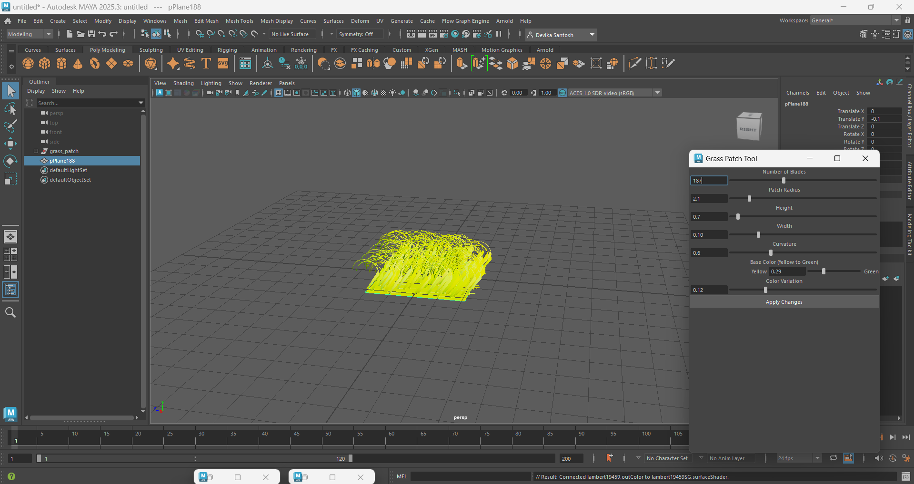

Tool Interface & Generated Output
Interactive parameter controls let technical artists quickly iterate on organic foliage clusters with natural variation in scale, bend, and hue.


Experience Designer & Creative Technologist
TOOLS & PIPELINE
Inspired by The Science behind Pixar exhibit, I built a procedural tool allowing artists to generate custom grass patches by tuning color, color variation, blade height and width, patch area, curvature, and blade density.
Interactive parameter controls let technical artists quickly iterate on organic foliage clusters with natural variation in scale, bend, and hue.

Demonstration of generating and customizing grass patches in real time inside Maya.
Inspiration: The Science behind Pixar — Programming Natural Variety